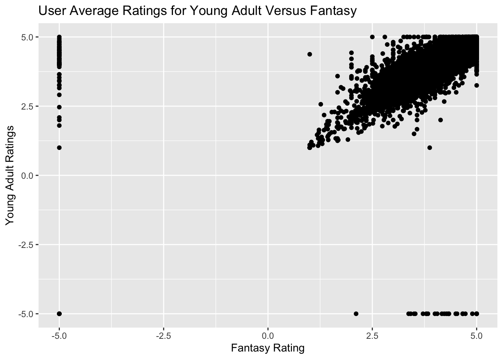
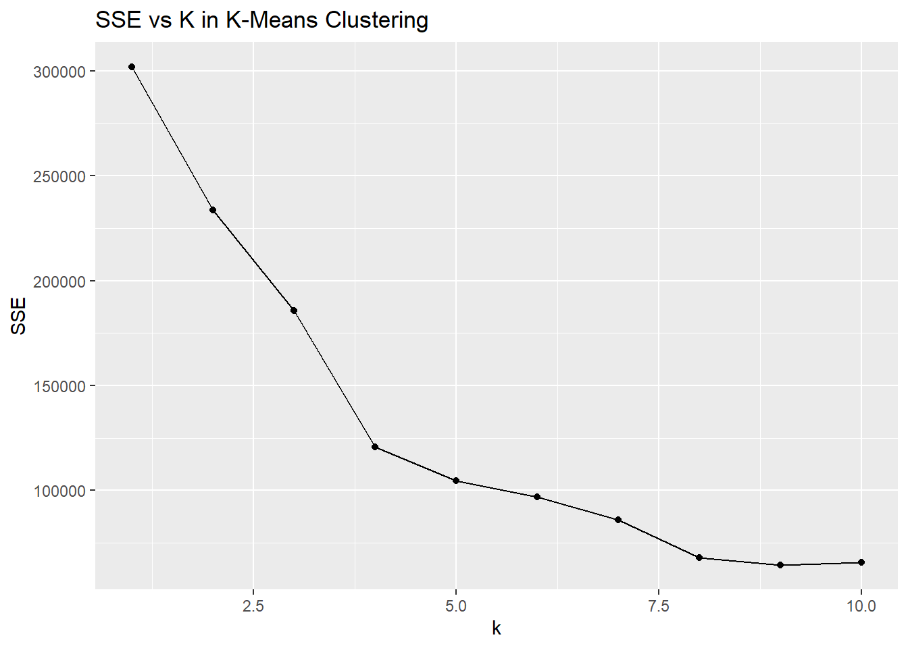
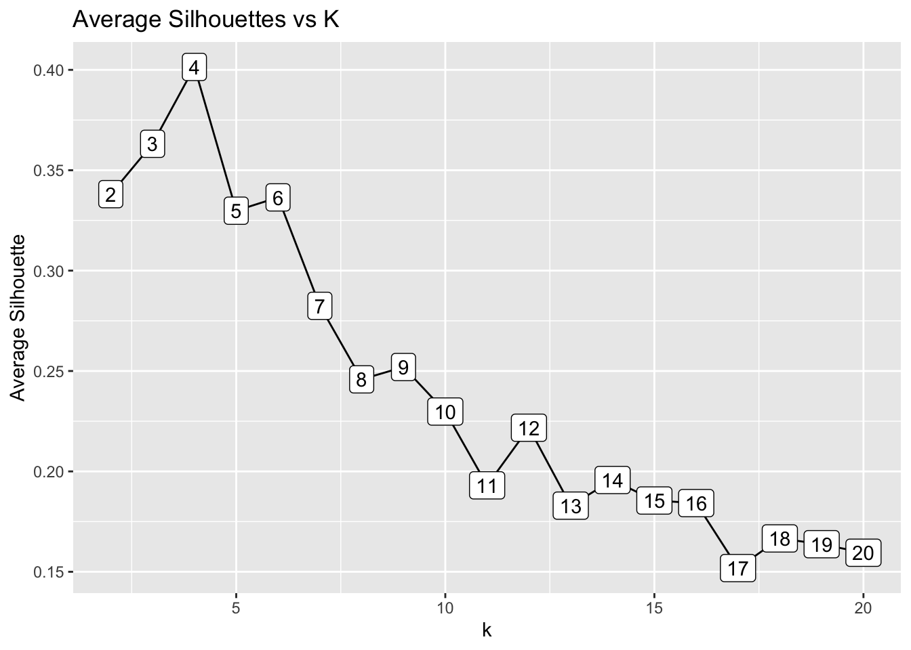
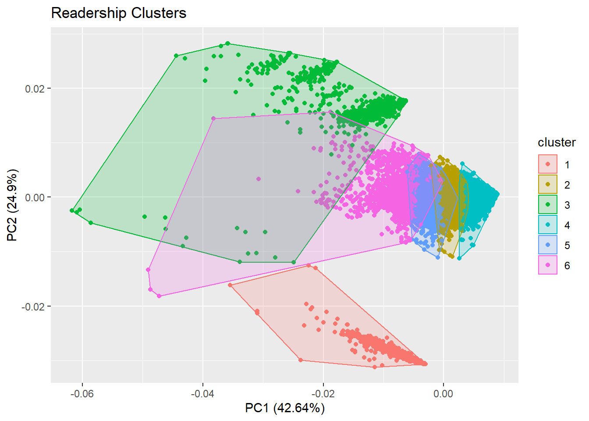
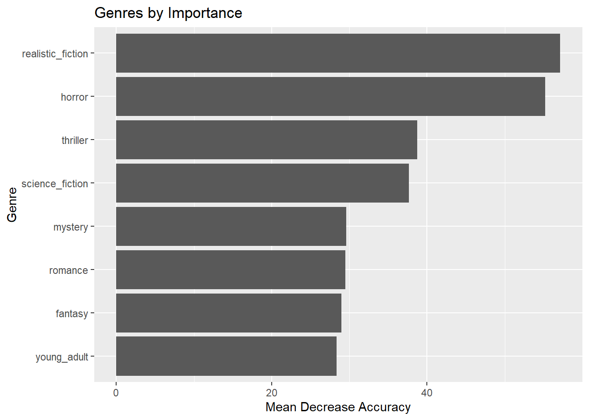

Analyzing Goodreads’ Readership
Introduction
Goodreads is a popular social cataloging website where users can search, track, and rate books. The site also offers a variety of recommendation services that provide users a way to find books relevant to their reading history. Since its foundation in 2006, the site’s userbase has grown to 20 million users with over 50 million book reviews, making it a very large source of readership data.

Goodreads site
With so many users and reviews, an interesting experiment would be to see if we can characterize the readership of Goodreads based on user ratings. Specifically we are interested in answering the question, “Based on user ratings data, can we find common groups of users by how they rate certain genres of books?” With such information, we would be able to see if, for instance, there is a large group of sci-fi fans or a large group of romance and young adult fanatics that also happen to hate horror.
“Based on user ratings data, can we find common groups of users by how they rate certain genres of books?”
In this project, we demonstrate the process of doing this kind of analysis from the ground up by leveraging and manipulating a subset of Goodreads’ data using the Goodbooks-10k dataset (Zajac 2017) and performing statistical and cluster analysis to try to try to paint a generalized picture of the site’s readership.
Understanding and Pre-processing the Data
The Goodbooks-10k data obtained from GitHub consists of several CSV files with information about the top 10,000 most rated books on Goodreads, including book metadata, tags, and relevant user ratings.
The CSV files can be easily loaded using R’s read.csv method. For example, here we load and display books.csv to get a broad picture of one of the datasets we will be working with. We can see that books.csv organizes its data in a tabulated manner with each book as a row and each book attribute as a column.
books_df <- read.csv("./goodbooks-10k/books.csv") %>%
as_tibble()
head(books_df) %>%
rmarkdown::paged_table()Let’s load the rest of our data as well.
ratings_df <- read.csv("./goodbooks-10k/ratings.csv")%>%
as_tibble()
tags_df <- read.csv("./goodbooks-10k/tags.csv")%>%
as_tibble()
book_tags_df <- read.csv("./goodbooks-10k/book_tags.csv")%>%
as_tibble()With our data loaded, we can begin to do some data manipulation. Since we are interested in analyzing various genres, let’s start by narrowing down the tags dataframe, tags_df, with the genre tags we are interested in. We can do this using a pipeline as shown below.
tags_df <- tags_df %>%
filter(tag_name %in% c(
"fantasy",
"mystery",
"horror",
"realistic-fiction",
"romance",
"science-fiction",
"thriller",
"young-adult"
)) %>%
as_tibble()
tags_df %>%
rmarkdown::paged_table()However, this tag information is not very helpful by itself. We want to be able to use it in conjunction with the other data we have. One way to accomplish this is by joining data across different data frames through a common attribute. We construct a pipeline to link data from books_df and book_tags_df through the shared attribute, goodreads_book_id. From there, we then link book_tags_df and tags_df through tag_id, creating a new dataframe with an entry for each book’s genre tag.
book_genres_df <- books_df %>%
inner_join(book_tags_df, by="goodreads_book_id") %>%
inner_join(tags_df, by="tag_id") %>%
select("book_id", "title", "tag_name")
book_genres_df %>%
select("title", "tag_name") %>%
head(15) %>%
rmarkdown::paged_table()From the resulting data frame, we can see that tag_name does indeed describe the genre of books it is associated with.
In order to answer our question, we need to collate data on how users review books from certain genres. To do so, let’s build another pipeline to join with ratings_df and link users with the genres of the books they rated. We can do a summary on the data frame from there to end up with a table of mean ratings in each genre of interest for all users. These ratings range from 1 to 5, with a mean rating of -5 to mark genres with no rating.
# Note: This takes awhile to run...
user_features_raw_df <- ratings_df %>%
inner_join(book_genres_df, by="book_id") %>%
spread(tag_name, rating) %>%
select(-book_id, -title,)
user_features_df <- user_features_raw_df %>%
group_by(user_id) %>%
summarize_all(mean, na.rm=TRUE) %>%
select(-user_id,) %>%
mutate_if(~ any(is.na(.x)),~ if_else(is.na(.x),-5,.x)) # Replace na with -5
# Convert column names to snake_case
colnames(user_features_df) = to_snake_case(colnames(user_features_df))
head(user_features_df, 15) %>%
mutate_all(round, 2) %>%
rmarkdown::paged_table()Visualization and Analysis
Now that we have transformed the original data into a data frame of average genre ratings for all users, we can begin analyzing users based on genre ratings.
One way to better understand data in general is through visualization. For example, if we want to see where the readership lies on ratings for young adult versus fantasy, we can do so by plotting the average ratings from both genres on a 2D scatterplot.
ggplot(user_features_df, mapping=aes(x=fantasy, y=young_adult)) +
geom_point() +
labs(
title="User Average Ratings for Young Adult Versus Fantasy",
x="Fantasy Rating",
y="Young Adult Ratings"
)
From the graph, it appears most user have average ratings clustered between 3 and 5 with no strong preference for one genre versus the other. There are also several users that appear to be readers of one genre but not the other, and at least one user that does not read from either.
Clustering for Higher Dimensions
While a 2D graph is fine for comparing two genres, it becomes harder to visualize data like this beyond 3 variables since we run out of spatial dimensions. Furthermore, we are also interested in clustering our data. While we had done a very cursory grouping by eye-balling the data above, ideally, there should be a way to more formally say which data points form a group with one another.
The solution to both of these problems is found in two methods known as K-means clustering and principal component analysis (PCA).
K-means clustering is a way to cluster, or group, data points. The algorithm designates K centroids representing the centers of their respective clusters. Each data point is assigned to the closest centroid, and the algorithm iteratively optimizes the centroids to try to reduce the total distance between it and all the points in its cluster.

K-means on iris flower species
Meanwhile, principal component analysis (PCA) is a way to reduce the dimensions in high-dimensional data while still trying to preserve features from the original space. Roughly, PCA tries to find a set of linear transformations from the original data that prioritizes maximizing variance for each dimension of the transformed data. At the end, the first two dimensions of the transformed data will ideally encode enough of the variance from the original high-dimensional data that graphing only those two dimensions should suffice in representing the original data, making PCA a very useful tool for visualization.

Example PCA: The transformed coordinate system in red maximizes the variance of the pixel locations.
When used in conjunction, K-means clustering will allow us to formally cluster multi-dimensional data and PCA will allow us graph the clustered data in 2D for easy visualization.
Determining K
A key roadblock with using K-means is that we do not have a good idea of what is a “good” K, or number of clusters. One way we can address this is by doing several test runs with different K’s and comparing them, specifically, by comparing their total sum of squared distances (SSE). Intuitively, a good clustering should minimize the distances of points to the centroids of their respective clusters which would be reflected in a low total SSE (Dabbura 2018).
While we want to lower variation within clusters, at the same time, we also want our clusters to actually be clusters. This means that for any data point, it should ideally be close to the centroid of its cluster and far from others, a metric known as the silhouette (Boehmke, n.d.). While increasing K to an unreasonably large number may reduce total SSE, data in such a clustering would have low silhouettes since data points in one cluster would be very close to data points in other clusters.
The goal of finding a good K then resides in reducing SSE while still trying to keep silhouette high. Let’s compute and graph both SSE and silhouette from a sample of the users to see what a good K might be.
set.seed(320)
k_range <- 2:20
user_features_sample_df <- sample_n(user_features_df, 1000)
# SSE
sse <- sapply(k_range, function(k) {
kmeans(user_features_sample_df, k)$tot.withinss
})
ggplot(mapping=aes(x=k_range, y=sse)) +
geom_line() +
geom_label(aes(label=k_range)) +
labs(
title="Total SSE vs K",
x="k",
y="Total SSE"
)
# Average silhouettes
sil <- sapply(k_range, function(k) {
km.res <- kmeans(user_features_sample_df, centers=k)
ss <- silhouette(km.res$cluster, dist(user_features_sample_df))
mean(ss[,3])
})
ggplot(mapping=aes(x=k_range, y=sil)) +
geom_line() +
geom_label(aes(label=k_range)) +
labs(
title="Average Silhouettes vs K",
x="k",
y="Average Silhouette"
)
Observing both graphs, K = 6 appears to be a point where total SSE has begun to flatten but average silhouette is still somewhat high, making it a reasonable compromise for K. Above K = 6, the total SSE does decrease, but not significantly enough to warrant a corresponding decrease in average silhouette. With K in hand, we can run K-means clustering on the full data now and graph using PCA.
set.seed(320)
kmeans_res <- kmeans(user_features_df, 6)
kmeans_res$centers %>%
as_tibble() %>%
mutate_all(round, 2) %>%
rmarkdown::paged_table()autoplot(kmeans_res, data=user_features_df, frame=TRUE) +
labs(title="Readership Clusters")
We can try to qualitatively summarize our clusters:
- Rates average 4 in all genres but doesn’t read realistic fiction
- Rates average 4 in all genres
- Rates average 3-4 in all genres but dislikes sci-fi and doesn’t read horror
- Rates average 4.5-5 in all genres
- Rates average 3.5 in all genres
- Rates average 3 in all genres
Making Predictions
Now that we have done some analysis on our data and characterized Goodreads’ users into clusters, let’s see if we can predict which clusters users will land in using some basic machine learning (ML) techniques.
Before building a model, we need to split the data we will be working with. Data is split into two classes: one set for training the model and the other for testing the model. Let’s take a sample of our users and split them into training and testing datasets.
set.seed(1234)
# Set up training data for cluster prediction
user_sample <- user_features_df %>%
mutate(cluster=factor(kmeans_res$cluster)) %>%
sample_n(5000)
# Split training-testing 3:1
n <- nrow(user_sample)
ntrain <- round(n*0.75)
split_index <- sample(n, ntrain)
train_data_ratings <- user_sample[split_index,]
test_data_ratings <- user_sample[-split_index,]Now that we have split our data, we will test two types of classification models: random forests and state vector machines.
Random Forests
First, we’ll take a look at a popular tree-based model known as a random forest. Random forests are groups of decision trees used together to make classification decisions. For a given classification, every tree makes its own decision and the results from all trees are aggregated together at the end to determine the final classification. The benefit of using a random forest versus a single tree is that, generally, the random forest improves prediction results and reduces instability from using singular decision trees.

Random forest example
We can train a random forest with 200 trees using the code shown below.
rf_model <- randomForest(cluster ~ .,
ntree=200,
importance=TRUE,
data=train_data_ratings) Training a random forest model has the added benefit of allowing us to see which predictors are the most important for a classification decision. The importance of a predictor is determined using the mean decrease in accuracy. Mean decrease in accuracy of a predictor is the decrease in accuracy when the predictor is removed from the model and allows us to see which predictors are the most influential. When comparing mean decrease in accuracy, a larger mean decrease for one predictor over another means that if the first predictor were removed, it would result in the model making on average more misclassifications than if the second predictor were removed.
We extract and plot the mean decrease in accuracy for all genres in the following:
variable_importance <- importance(rf_model)
rf_predictors_importance <- variable_importance %>%
as.data.frame() %>%
rownames_to_column(var="predictors")
rf_predictors_importance %>%
ggplot(aes(x=reorder(predictors, MeanDecreaseAccuracy), y=MeanDecreaseAccuracy)) +
geom_bar(stat="identity") +
coord_flip() +
labs(title="Genres by Importance", y="Mean Decrease Accuracy", x="Genre")
Observing the graph, it seems that the average ratings for realistic fiction horror, and sci-fi are best able classify users since they show the greatest mean decrease in accuracy on removal.
Support Vector Machines
The other model we are interested in is a support vector machine (SVM) multi-classification model. SVMs work by trying to increase the number of dimensions so it can divide clusters of points using a plane in n-dimensions called a hyperplane.
For instance, in the example below, by transforming the points in 2D to 3D, it becomes possible to partition the two clusters of points using a 3D plane whereas this would not have been possible with a line in 2D.

SVM Example: Increasing dimensions allows for a clear separation
Let’s train an SVM model.
set.seed(1234)
svm_model <- svm(cluster ~ .,
data=train_data_ratings,
method="C-classification",
kernal="radial",
gamma=0.1,
cost=10)Comparing Models
Now that we have both a random forest model and SVM, it would be useful to do some basic comparisons of between the two. One method of evaluating how good a model is can be done by looking at a confusion matrix of the test data. A confusion matrix tabulates the classifications made by a model with the predicted classes as rows and the true classes as columns.
Let’s plot the confusion matrices for our random forest and SVM model on the test data.
pred_rf <- predict(rf_model, test_data_ratings)
table(pred_rf, test_data_ratings$cluster)##
## pred_rf 1 2 3 4 5 6
## 1 16 0 0 0 0 0
## 2 1 457 4 13 21 2
## 3 0 0 7 0 0 0
## 4 1 9 0 220 1 0
## 5 3 13 3 0 383 11
## 6 1 0 1 0 7 76pred_svm <- predict(svm_model, test_data_ratings)
table(pred_svm, test_data_ratings$cluster)##
## pred_svm 1 2 3 4 5 6
## 1 22 0 0 0 0 0
## 2 0 477 0 1 1 0
## 3 0 0 14 0 0 0
## 4 0 1 0 232 0 0
## 5 0 1 0 0 410 1
## 6 0 0 1 0 1 88Cursory observation of both matrices indicates that the SVM seems to display slightly higher accuracy over the random forest. Overall, however, both models display very high accuracy, indicating that both the random forest and SVM we trained are very adept at figuring out a user’s cluster based on their average genre ratings.
Results and Discussion
Clustering
Observing the graph of clusters, groups 2, 4, 5, and 6 appear to be located close to each other. Among the clusters, groups 1, 3, and 6 show the largest amounts of variation within their clusters while groups 2, 4, and 5 are tightly clustered.
The close proximity of groups 2, 4, 5, and 6 to each other likely means that the user ratings in these groups are harder to distinguish from each other which makes sense as these are all groups that are similar to each other in that they have users who have constant average ratings across all genres.
Observing group 6, both its large variation and slight intersection into group 5 seem to indicate that while the average ratings are around 3, there are probably a substantial amount of users within the group that rate very low, dragging the averages down.
Among the clusters that had more specific qualitative descriptions, group 3 has very large variation within its cluster. Moreover, informal observation of the cluster graph reveals smaller clusters within this group as well. This seems to indicate that while the users in this group generally have the qualitative characteristics as described above in common, there are still sub-groups within this cluster that have varying defining characteristics from each other.
Group 1 is another cluster with a more specific qualitative description. The variation within this cluster is also somewhat high and the cluster is located far away from the other groups. This seems to indicate that while there truly is a common group of readers that do not read realistic fiction, they are also likely very different from each other in their average ratings across other genres, despite being in the same cluster.
Predictions
By training our random forest model, we determined that realistic fiction, horror, and sci-fi genre ratings significantly affected which cluster a given user would fall in. This result makes sense when considering how our clusters were separated. While most of the K-means clusters generated seemed to depend less on the value of average user ratings within specific genres and more on a user’s overall average ratings across all genres, certain groups showed exceptions to this. For instance, group 1 seems to made up of users that don’t read or review realistic fiction books and group 3 seems to be made up of users that dislike science fiction and don’t review horror books. The genres in these conditions correspond with 3 of the top 4 most important predictors determined by our random forest model, showing that that the model was able to learn patterns in clustering.
Observing the performance between the random forest and SVM models, the SVM appeared to have slightly outperformed the random forest. Interestingly, the fact that both models performed very well on the test data seems to imply that the random forest and SVM models were able to learn how to determine a user’s cluster based on their average genre ratings alone without needing any underlying context about how the K-means clustering algorithm functioned, showing how powerful and flexible ML models can be at solving problems in general.
Areas of Improvement
While we were able to successfully cluster users in this project, there are still several potential areas for improvement. One issue was that by only working with the average genre ratings for each user, we lost information about the variance of ratings within each genre per user. This means that certain users may have ended up in the same cluster because they had similar average ratings but still rate books differently in reality because the variation in how they rate was not accounted for.
Another area that could have been improved was our clustering algorithm. K-means clustering was not able to find some of the smaller clusters in group 6, possibly due to a large amount of users in other locations which ended up occupying the algorithm. Since there were more data points densely packed in the area near groups 2 and 5, the centroids for K-means ended up gathering near there and ignoring smaller clusters elsewhere.
Conclusion
In this project, we demonstrated how data from Goodreads could be used to find common groups of users among the site’s readership and predict which groups certain users fall into based on their average genre ratings. We were able to do this through a combination of data manipulation with pipelines, statistical analyses with K-means clustering and PCA, and machine learning with random forests and SVMs.
The clusterings revealed some insights, such as the existence of a large group of users that do not read realistic fiction and a large group of users that have little interest in sci-fi and horror. Meanwhile, the high accuracy of our random forest and SVM were able to show how ML models were able to learn cluster assignment for users without needing any information about the underlying clustering algorithm. While the project as a whole was successful, there are still several areas of improvement we could have addressed for characterizing users, such as accounting for rating variation per user and the use of more advanced clustering algorithms.
Clustering a site’s userbase remains as an important problem that extends beyond Goodreads. In general, being able to find natural clusterings of users is both useful and powerful in that it allows for a large number of people to be bucketed into human-understandable categories. Knowing these clusters can enable platforms to gain a better sense of their userbase and allow them to better target content and appropriately address their communities.
References
Boehmke, Bradley. n.d. “K-Means Cluster Analysis.” UC Business Analytics R Programming Guide.
Dabbura, Imad. 2018. “Applications, Evaluation Methods, and Drawbacks.” Towards Data Science.
Zajac, Zygmunt. 2017. “Goodbooks-10k: A New Dataset for Book Recommendations.” FastML.